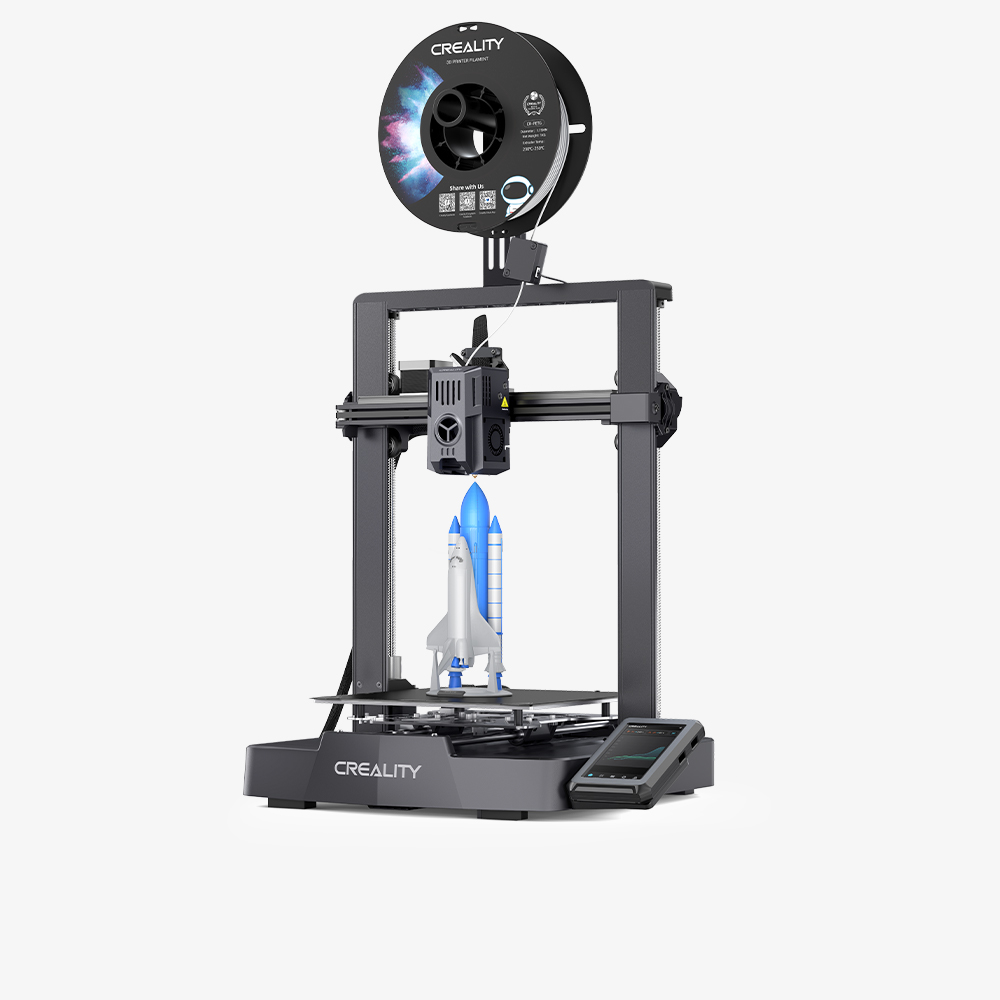
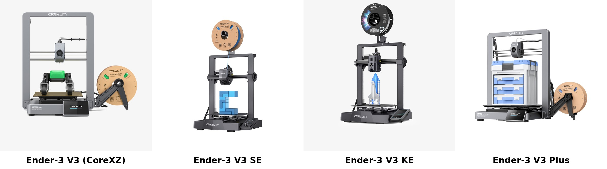
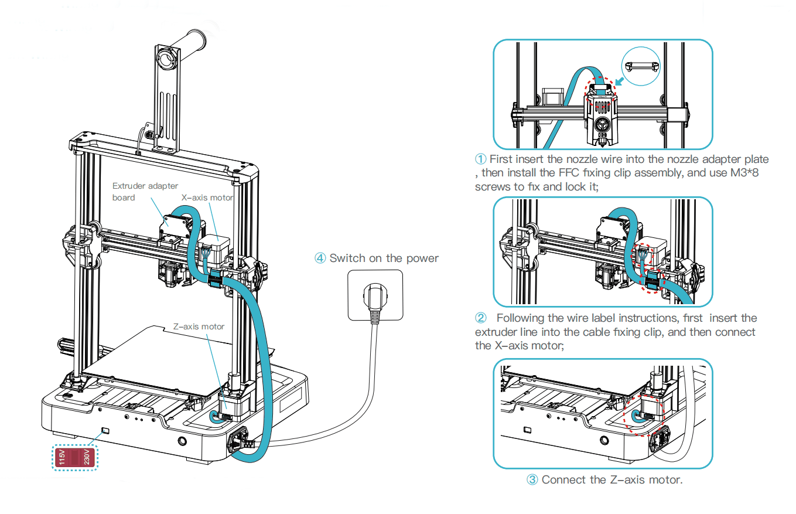

3D-printer: Creality Ender-3 V3 KE
Min prosjektside for printeren – feilsøking, deler, kalibrering og hva jeg har printet.
Om printeren

Jeg tror printeren min er en Ender-3 V3 KE ikke 100 % bekreftet. Sjekk typeskiltet bak/under printeren for å være sikker – det avgjør hvilke reservedeler som passer.
Dette er bekreftet fra Creality sine egne sider om KE:
- Kjører Creality OS, som bygger på Klipper-firmware. (creality.com)
- 4,3" berøringsskjerm (480×272). (Creality Wiki, delelista for KE)
- Automatisk nivellering med CR Touch. (delelista for KE)
- Varmeseng 24 V / 270 W, 235×235 mm, og PEI-plate. (delelista for KE)
- Hotend: keramisk varmehode, delenummer
4001030130. (delelista for KE) - Strømforsyning 24 V / 350 W. (delelista for KE)
Hvordan kjenne igjen V3, SE, KE og Plus

| Modell | Kjennetegn | Hotend-delenummer |
|---|---|---|
| V3 SE | Liten 3,2" fargeskjerm med dreieknapp (ikke berøring). Åpen ramme som KE. | 4001030127 (aluminium-hotend, svart varmerør) |
| V3 KE | Ligner SE, men har 4,3" berøringsskjerm uten knapp, foran til høyre. | 4001030130 (keramisk varmehode, rødt) |
| V3 | CoreXZ: en høy, lukket metallramme rundt hele printeren, med tverrbjelke øverst. | 4001030134 (keramisk hotend for V3/V3 Plus) |
| V3 Plus | Samme oppbygging som V3, men tydelig større. | 4001030134 (samme som V3) |
Kilder: Creality Wiki-delelistene for V3 SE og V3 KE. Nummeret for V3/V3 Plus kommer fra produktsidene til Creality, 3DJake og 123-3D. Beskrivelsen av utseendet er basert på bildene over.
Feilsøking: termistor / hotend
Printeren min har gitt termistor- eller overopphetingsfeil på hotenden. Slik går jeg fram, fra det enkleste til det dyreste.
- Les feilkoden på skjermen. Noter den i loggen nederst. Se tabellen under for hva koden betyr.
- Sjekk temperaturen på skjermen når printeren er kald. Romtemperatur (ca. 20 °C) er normalt. Viser den noe urimelig, for eksempel −14 °C eller over 300 °C, er det nesten alltid termistoren eller ledningen til den som er brudd eller kortsluttet.
- Sjekk kontaktene først. Det er gratis. Koble fra og sett inn igjen termistorledningen og flatkabelen fra hovedkortet til adapterkortet på printhodet. Se etter løse, bøyde eller brente pinner.
- Sjekk ledningsføringen. Se etter skader på kabelføringen langs X-aksen, spesielt der den bøyes når printhodet beveger seg.
- Ta av silikonsokken og se på hotenden. Er det sprekker i den keramiske varmeringen, skadde ledninger eller plast som har lekket ut? Sitter termistoren løst i holderen sin?
- Test igjen. Varm opp bare hotenden, for eksempel til 200 °C, og følg med på kurven. Klatrer den jevnt og holder seg stabilt, er feilen trolig løst.
- Bytt hotend hvis feilen kommer tilbake. På KE er termistoren en del av hotend-settet, så du bytter hele settet. Se Reservedeler og steg-for-steg-guiden.
- Etter byttet: kjør PID-kalibrering. Se Kalibrering.
Feilkoder for KE (temperatur)
| Kode | Betydning (ifølge Creality) | Hva du gjør |
|---|---|---|
| 2092 | Temperaturen på dysen eller sengen er utenfor grensene (f.eks. −14 °C). Termistoren er frakoblet. | Finn ut hvilken del som viser feil temperatur, og bytt den (hotend-sett eller varmeseng). |
| 2509 | Dysen varmes ikke opp. Flatkabelen eller termistorledningen sitter ikke riktig. | Sjekk og sett inn igjen flatkabelen og termistorledningen. |
| 2564 | Dysen når ikke ønsket temperatur. | Sjekk ledningene til adapterkortet, se etter skader på den keramiske varmeringen, og mål spenningen på hovedkortet med multimeter. |
| 2510 / 2565 | Varmesengen varmes ikke opp eller når ikke temperaturen. | Sett inn igjen ledningen og termistoren til sengen. |
| 2000 | Kommer ofte sammen med andre koder. | Løs den andre koden først. Kommer bare 2000, eksporter loggen og send den til Creality. |
Kilde: Creality Wiki – feilsøking for Ender-3 V3 KE. Creality sitt generelle råd ved for høy dysetemperatur ved oppstart er å starte på nytt, kjøre automatisk PID og koble termistorledningen fra og til igjen.
Legge kablene når du monterer printeren
Kablene er det siste steget i Crealitys monteringsguide (kapittelet «Equipment wiring»). Her er den offisielle tegningen og stegene, med mine notater om hvor det lett går galt.

Slik står det på tegningen
- Kabelen inn i adapterkortet på printhodet. Sett først «nozzle wire»-kabelen inn i adapterkortet. Sett deretter på festeklemmen («FFC fixing clip») og skru den fast med M3×8-skruer. (Creality Wiki, tegning ①. Video: Ender-3 V3 KE unpacking, ca. 1:35–1:50)
- Kabelen i kabelklemmen, så X-motoren. Følg merkelappene på kablene: legg først «extruder line» i kabelklemmen ved X-motoren, og koble deretter til X-aksemotoren. (Creality Wiki, tegning ②. Video ca. 1:50–2:00)
- Koble til Z-motoren. Kontakten sitter nede ved Z-motoren, ved siden av strøminntaket. (Creality Wiki, tegning ③. Video ca. 2:00)
- Sjekk spenningsbryteren, og slå så på strømmen. Nett på 200–240 V: velg 230 V. Nett på 100–120 V: velg 115 V. Fabrikkinnstilling er 230 V. (Creality Wiki, advarselen og tegning ④. Video ca. 2:05–2:10)
På tegningen går kabelen fra Z-motoren og opp langs søylen til X-motoren. Derfra går den i en bue til printhodet. Hvilken kontakt på motorene som er hvilken, står bare på merkelappene på kablene. usikkert Jeg fant ingen offisiell tekst som beskriver kontaktene, kabelfarger eller pinner, og jeg har ikke gjettet. Følg merkelappene og se på videoen.
To kabler som ofte glemmes tidligere i monteringen
- Kabelen til filamentsensoren. Rammen settes ned i bunnen, og sensorkabelen føres gjennom bunnplaten og kobles sammen. Pass på at profilen ikke presser mot kabelen. (Creality Wiki, tegning for «Gantry frame»)
- Skjermkabelen. Skjermen festes til høyre side av bunnen med tre M4×10-skruer, og tegningen viser «Display wiring» ved skjermen. (Creality Wiki, tegning for «Display screen». Video ca. 1:00–1:15) usikkert Om kabelen skal settes i før eller etter at skruene sitter, går ikke tydelig fram av teksten. Se videoen.
Sjekkliste for kabelføring
Hvor det typisk går galt
| Feil | Det du ser | Hva du gjør |
|---|---|---|
| Kabelen til printhodet sitter ikke riktig i adapterkortet | Feilkode 2509 (dysen varmes ikke) eller 2194 (Z-aksen finner ikke hjem under selvtest) | Sett inn den 30-pins flatkabelen på nytt, både ved adapterkortet og ved hovedkortet. (Creality Wiki) |
| Ekstrudermotoren går ikke | Ekstruder-giret roterer ikke | Sett inn flatkabelen til adapterkortet på nytt. (Creality Wiki) |
| Motorkontakter løse, skeive eller byttet om | Feilkode 2022, X/Y/Z finner ikke hjem, motoren rykker | Se etter bøyde pinner på X- og Z-motoren, og at X- og Y-kablene sitter fast på hovedkortet. (Creality Wiki) |
| Filamentsensorkabelen er klemt eller ikke koblet til | Printeren sier at filamentet er brukt opp, selv om det ikke er det | Demonter rammen, sett inn sensorkabelen på nytt (også ved hovedkortet), og pass på at den ikke klemmes. (Creality Wiki) |
| Feil spenning på bryteren | Kan skade printeren | Sett bryteren på riktig nettspenning før du kobler til strøm. (Creality Wiki) |
Kilder: Creality Wiki – How to assemble equipment quickly, Creality – Ender-3 V3 KE unpacking (YouTube) og Creality Wiki-sidene for feilkoder. Tidspunktene i videoen er omtrentlige.
Bytte hotend steg for steg (og legge kablene)
Slik bytter du hele hotend-settet på KE (Creality 4001030130). Stegene følger Crealitys egen servicevideo. Tidspunktene er omtrentlige.
Når du bare bytter dysen, er det omvendt: da skal hotenden være varm. (Creality Wiki – dysebytte)
Verktøy
- Små unbrakonøkler. usikkert Creality oppgir ikke størrelsene for originalsettet. Micro Swiss oppgir 1,5 mm og 2,0 mm for sitt KE-sett, og en 7 mm fastnøkkel til dysen. (Micro Swiss, instruksjon M3103)
- Det nye hotend-settet. Passer ikke til KE:
4001030134. Se Reservedeler. - Telefon til å ta bilder før du kobler fra noe. eget råd, ikke fra Creality
Fremgangsmåte
- Ta ut filamentet. «Please take out the consumables before replacing the nozzle kit.» (Creality: Replacement hotend kit, ca. 0:04)
- Slå av printeren og trekk ut strømledningen. (videoen, ca. 0:08)
- Ta av viftekassen. Skru ut de tre skruene og ta kassen av. (videoen, ca. 0:12) Micro Swiss sier at du også må koble de to viftekablene fra kortet på printhodet. (Micro Swiss) usikkert Det vises ikke i Creality-videoen, og jeg vet ikke om det gjelder originalsettet.
- Skru av CR Touch. Skru ut de to festeskruene. CR Touch henger i sin egen kabel mens du jobber, og trenger ikke kobles fra. (videoen, ca. 0:16. Micro Swiss sier det samme)
- Løsne topp-skruen («loosen the top thread») på kjøleblokken. (videoen, ca. 0:24. Micro Swiss: skruen sitter på baksiden av kjøleblokken)
- Ta av silikonsokken. Det er en kant nederst på hotenden, så sokken må klemmes sammen og trekkes over kanten. (videoen, ca. 0:32. Micro Swiss for kanten)
- Ta av det gamle settet og koble kabelen fra adapterkortet. Ta et bilde først så du ser hvordan kabelen satt. (videoen, ca. 0:36–1:05. At kabelen kobles fra her, ser du i videoen, men det står ikke i teksten.)
- Sett inn det nye settet. (videoen, ca. 1:05–1:30)
- Sett kabelen på adapterkortet. Vær nøye med at hullene ligger på linje («make sure to align the holes»). Videoen markerer kontakten med en rød ring. (videoen, ca. 1:36–1:50)
- Stram topp-skruen. (videoen, ca. 1:52)
- Skru CR Touch fast igjen med de to skruene. (videoen, ca. 2:00)
- Sett på silikonsokken. Micro Swiss: la utsnittet i sokken ligge over kablene fra varmeelementet, og skyv sokken opp til den dekker toppen. (videoen, ca. 2:04. Micro Swiss for utsnittet)
- Monter viftekassen med de tre skruene. Hvis du koblet fra viftekablene, setter du dem på igjen først. (videoen, ca. 2:08–2:20. Micro Swiss for viftekablene)
- Koble til strøm, slå på og kjør selvtest. Gå til «Settings», «Equipment self-test», «Select all» og «Start detection». Vent til selvtesten er ferdig. (videoen, ca. 2:24–2:50)
Hvilke kabler er det, og hvor skal de?
- Originalsettet (Creality): videoen viser én kabel som settes på adapterkortet, med hullene på linje. Hvilken kontakt på kortet den skal på, kan du se i videoen ca. 1:36–1:50. (Creality-videoen)
- Tilleggsutstyr fra Micro Swiss: instruksjonen deres snakker om «heater» og «thermistor»-kontakter som kobles til «matching ports» på kortet. (Micro Swiss) En kommentar på Reddit sier «thick-heater, thin-thermistor», altså den tykke kontakten er varmeelementet og den tynne er termistoren. (r/ender3) usikkert Det er én brukerkommentar, og jeg vet ikke om den passer til akkurat ditt sett.
- Jeg fant ingen offisiell kilde som oppgir kabelfarger eller hvilken pinne som er hva, og har ikke funnet på noe. Ta bilde før du kobler fra, og sammenlign med videoen.
Sjekkliste før du slår på
Hvor det typisk går galt
- Kabelen sitter ikke helt inne eller er skeiv. Det gir feil 2509 (dysen varmes ikke) eller feil 2194. Sett inn kabelen på nytt. (Creality Wiki)
- Vifter som ikke går eller støyer. Creality lister løse eller skadde vifteledninger og ledninger som kommer i veien som mulige årsaker. (Creality Wiki)
- Kablene klemmes av viftekassen eller sokken. usikkert Ingen kilde sier dette rett ut for KE. Det er en mulig følge av punktene over, så se etter før du skrur til.
Test etter montering
- Selvtest på skjermen. Settings, Equipment self-test, Select all, Start detection. (Creality-videoen, ca. 2:24)
- Sjekk temperaturen kald. Rundt romtemperatur er normalt. Se Feilsøking.
- Varm opp hotenden til for eksempel 200 °C og følg kurven. Den skal stige jevnt og holde seg stabil.
- Kjør PID-kalibrering. Se Kalibrering.
- Nivellér på nytt. Se Kalibrering.
- Sjekk at begge viftene går når hotenden er varm.
Kilder: Creality – Service Tutorial Ender-3 V3 KE Replacement hotend kit (YouTube), listet på Creality Wiki. Micro Swiss: installasjonsinstruksjon for FlowTech-hotend til KE (et tilleggsutstyr, ikke originalsettet). Creality har også videoer for å bytte adapterkortet på printhodet og feilsøking av ekstrudermotoren.
Reservedeler
4001030130 (keramisk varmehode). Det er dette nummeret som står i Creality sin offisielle deleliste for Ender-3 V3 KE.3DJake – Creality Hotend (4001030130)
ca. 245 kr
Prisen ble sjekket 10.10.2026 og kan endre seg.
Polyalkemi – Hotend for Ender-3 V3 KE
ca. 299 kr
Norsk butikk. Prisen kan endre seg.
Creality EU – Ender-3 V3 KE Ceramic Heating Block Kit
Bare den keramiske varmeblokken, ikke hele hotenden. Rett fra Creality.
3DJake – alle reservedeler til KE
Oversikt over deler som passer KE: dyser, plater, vifter og mer.
CRE-4001030134 (ca. 368 kr hos 3DJake). Den er laget for Ender-3 V3 og V3 Plus. Har du en SE, trenger du 4001030127.Kilde: Creality Wiki – delelisten for Ender-3 V3 KE. Der står også dysesettet 4004020070, hovedkortet 4002020068 og CR Touch 4001010027.
Vedlikehold & kalibrering
1. PID-kalibrering av hotenden (etter bytte!)
PID-kalibrering lærer printeren hvordan den nye hotenden varmes opp, så temperaturen holder seg stabil. Kjør kommandoene i konsollen, for eksempel i Fluidd/Mainsail eller via Creality Print. Vent til målingen er ferdig (noen minutter) før du lagrer.
PID_CALIBRATE HEATER=extruder TARGET=220
SAVE_CONFIGFor varmesengen (valgfritt):
PID_CALIBRATE HEATER=heater_bed TARGET=60
SAVE_CONFIGKommandoene er standard i Klipper (Klipper: Config checks). Ifølge Creality er firmwaren på KE basert på Klipper. usikkert Hvordan du kommer til konsollen på KE kan avhenge av firmwareversjonen: skjermen, Creality Print, eller Fluidd/Mainsail med root-tilgang.
2. E-steps / rotation_distance (ekstruderen)
I Klipper heter «e-steps» rotation_distance. Du trenger bare å justere den hvis printeren mater for mye eller for lite filament. Slik gjør du det:
- Varm opp hotenden og merk filamentet 120 mm over inngangen til ekstruderen.
- Mat ut 100 mm sakte, for eksempel med
G91og såG1 E100 F60. - Mål hvor mye som er igjen til merket. Hvis det står igjen 20 mm, ble det matet riktig.
- Ny verdi = gammel
rotation_distance× (faktisk matet ÷ 100).
Metode: Klipper: Rotation distance. usikkert Om og hvordan printer.cfg kan endres på KE uten root, er ikke bekreftet. Fabrikkverdien er normalt riktig.
3. Nivellering av sengen
- KE nivellerer automatisk med CR Touch. Start den fra skjermen. I Klipper heter kommandoen
BED_MESH_CALIBRATE(Klipper: Bed mesh). - Rengjør platen først. Ifølge Creality kan plastrester eller lim på platen gi feil nivellering, så modellen ikke fester seg.
- Nivellér på nytt etter et hotend-bytte, siden dysehøyden kan ha endret seg.
4. Første lag
- Juster Z-offset på skjermen mens du printer første lag. Linjene skal være litt flate og ligge tett inntil hverandre, uten å være gjennomsiktige.
- Tørk av PEI-platen (for eksempel med isopropanol) og unngå fingermerker.
- Første lag bør printes sakte og litt tykkere enn resten. Bruk standardprofilen for KE i sliceren som utgangspunkt.
- Ifølge Creality slites platen over tid. Fester ikke modellene seg lenger, kan du bruke lim eller bytte plate.
5. Jevnlig vedlikehold (ifølge Creality)
- Fjern plastrester under platen og rundt akslingene før hver print.
- Bytt dyse etter ca. 500 timer med printing. Varm hotenden opp til 200 °C før du bytter.
- Sjekk at ekstruderingen er normal etter hvert filamentbytte.
Kilde: Creality Wiki – vedlikehold av Ender-3 V3 KE. Tipsene om første lag er generelle tips og kommer ikke fra Creality.
Prosjekter & logg
Lista ligger øverst i index.html, i LOGG. Oppføringene merket EKSEMPEL er bare eksempler. Bytt dem ut med dine egne.
Nyttige lenker
Creality (offisielt)
- Creality Wiki – Ender-3 V3 KE (brukerhåndbok, oppstart)
- Creality Wiki – feilsøking for KE (alle feilkoder)
- Creality Wiki – delelisten for KE
- Creality Wiki – vedlikehold av KE
- Creality – produktsiden for Ender-3 V3 KE
- Creality – nedlastinger (firmware, Creality Print)
- GitHub – Creality sin åpne Klipper-kildekode for KE
- YouTube – Creality sine servicevideoer for Ender-3 V3-serien laget for V3, mange gjelder også KE
Klipper og slicer
- Klipper – PID-kalibrering og grunnsjekker
- Klipper – rotation_distance (e-steps)
- Klipper – bed mesh (nivellering)
- Klipper – oversikt over kommandoer
- OrcaSlicer – gratis slicer med profil for KE